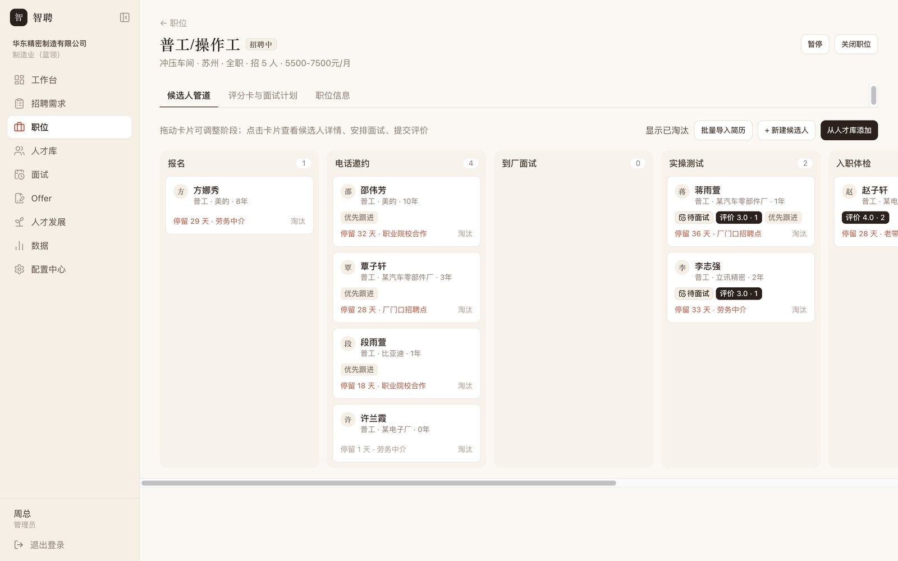
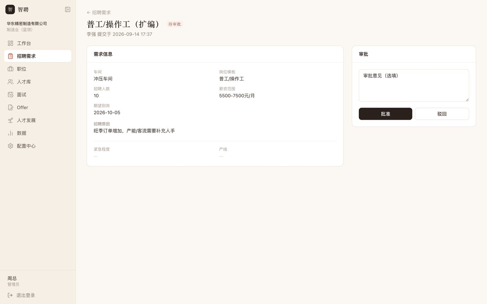
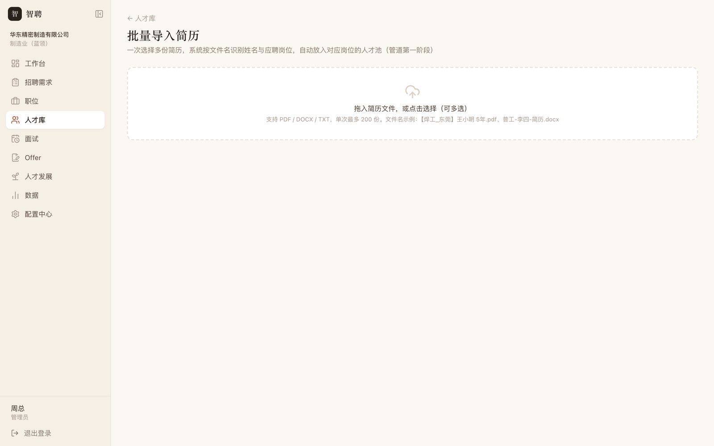
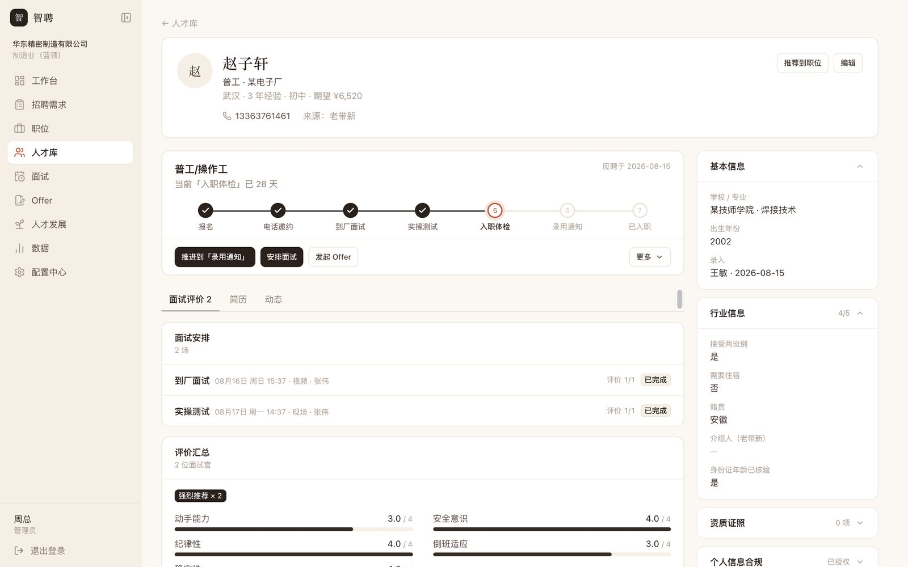
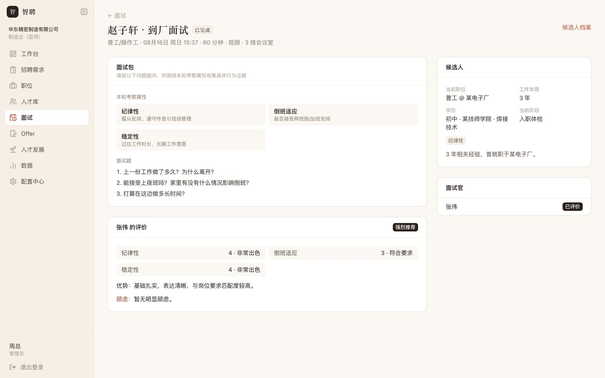
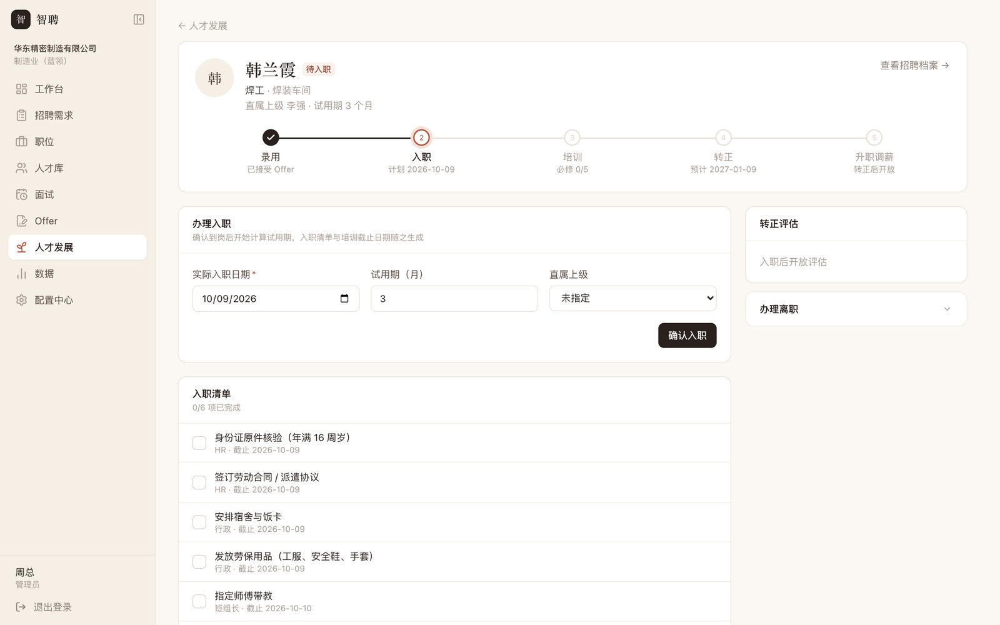
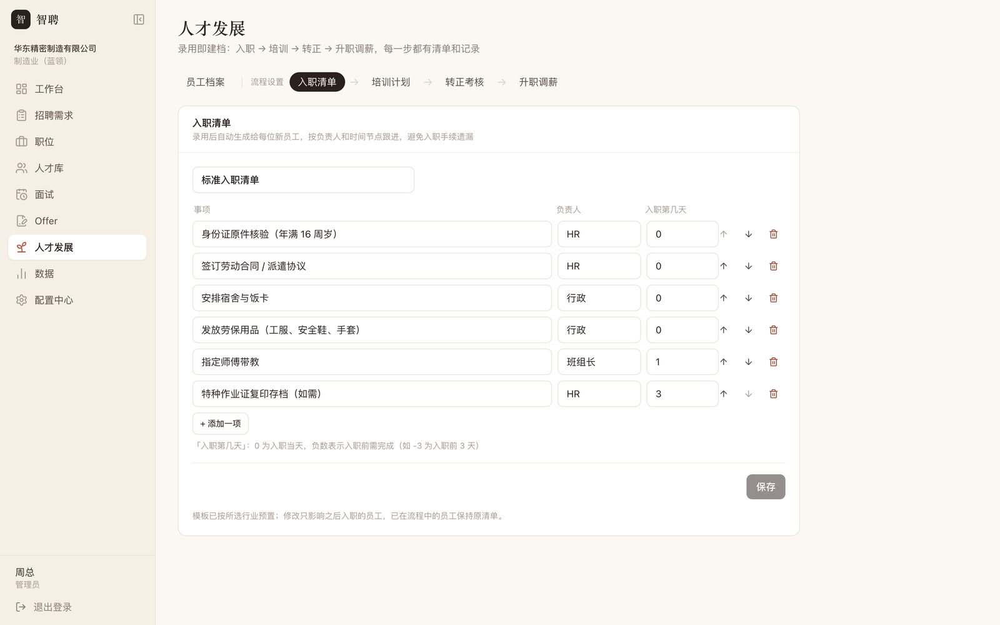
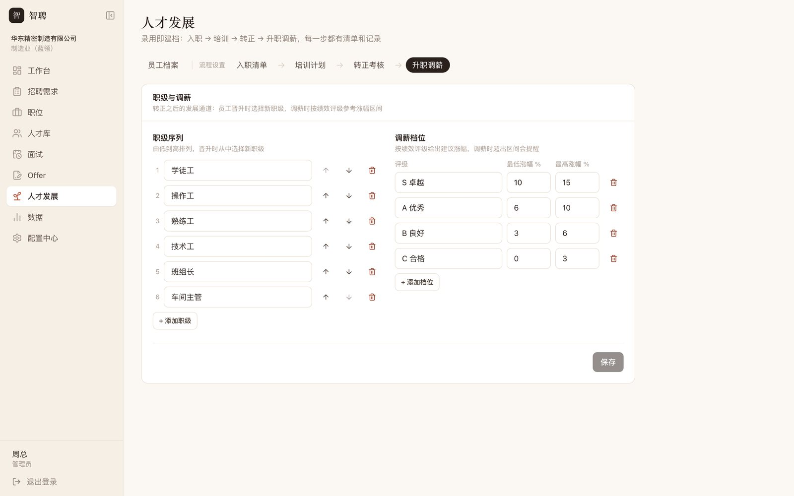
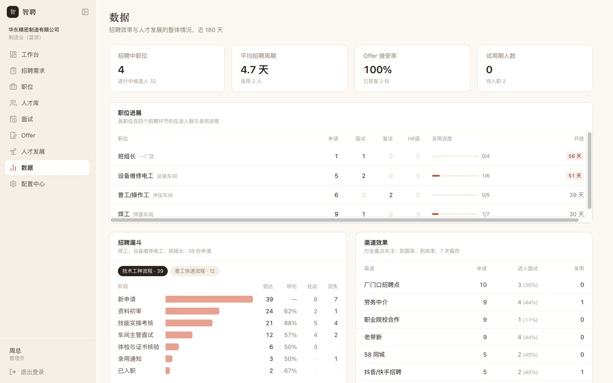

PROJECT 01 · 招聘管理
从招聘需求审批到入职转正、升职调薪的一体化招聘系统。不同行业的差异通过「行业方案包」配置实现，而不是为每个行业各写一套代码。
以下截图均来自本地运行的系统，内置一家制造企业的演示数据。

动手前先梳理了招聘从需求到入职的全流程，并横向比较互联网、制造、零售、医疗四类行业在流程、必须收集的信息、评估方式和核心指标上的差异。结论是：流程骨架是通用的，差异集中在「配置」上。




招聘里很多问题不是「没有工具」，而是规则只停留在口头上。这些规则被直接做成了系统行为：
招聘不在发出 Offer 时结束。候选人被录用后自动建立员工档案，按生命周期往下走，每一步都有清单和记录。



